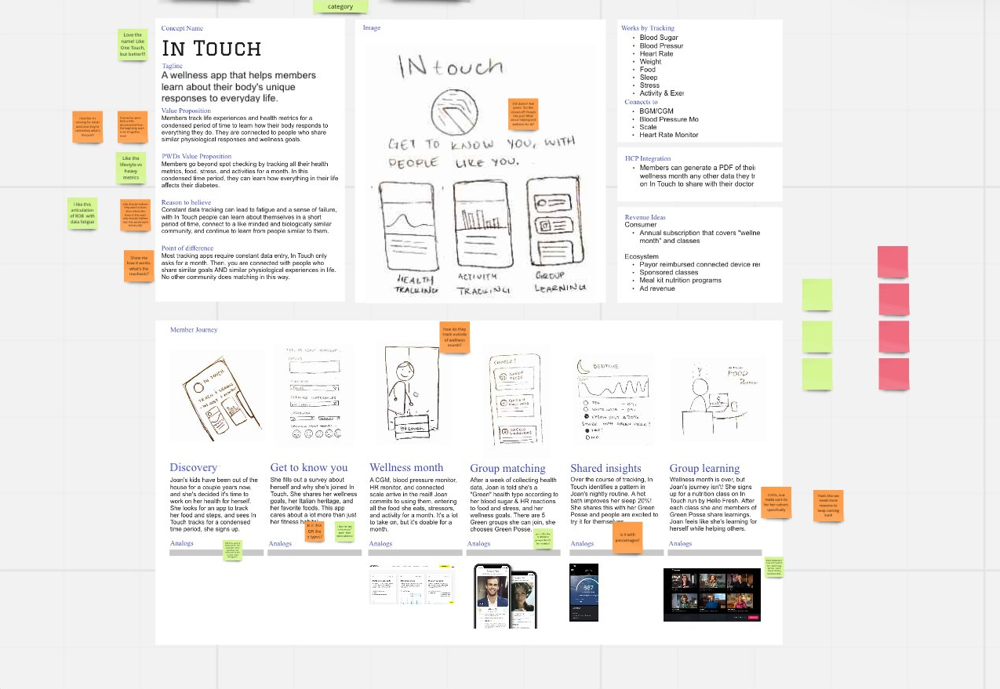
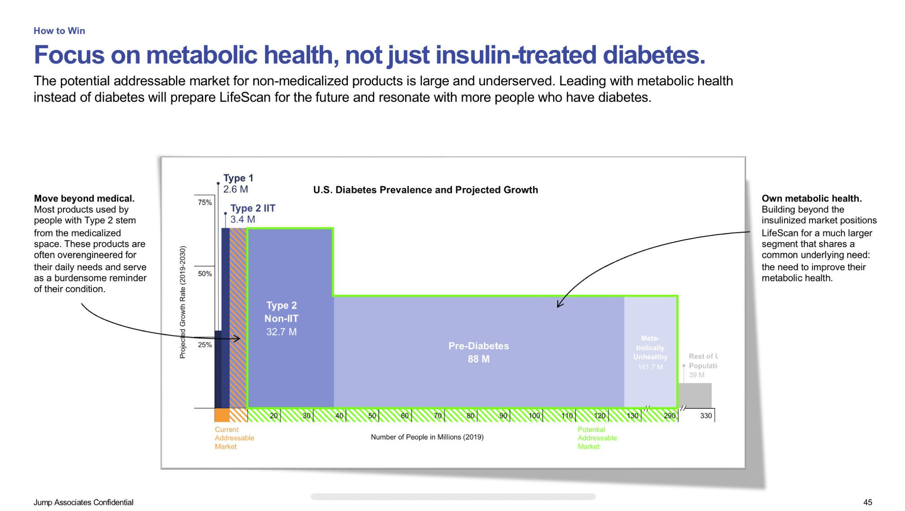
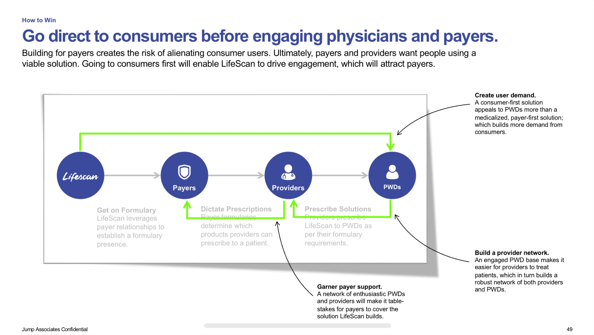
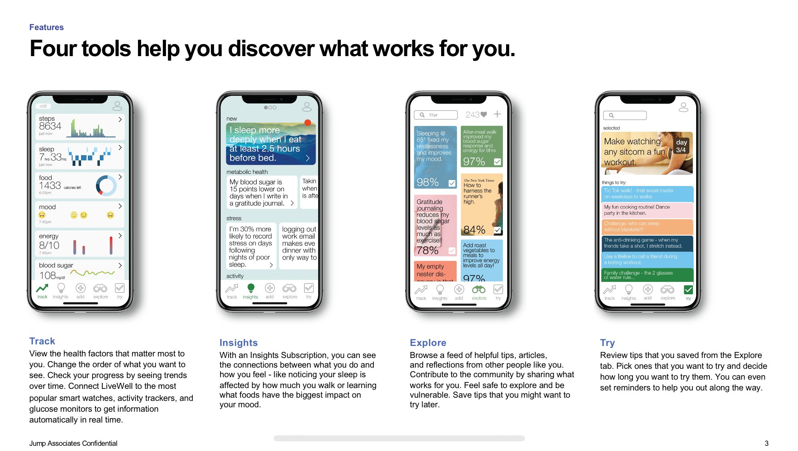
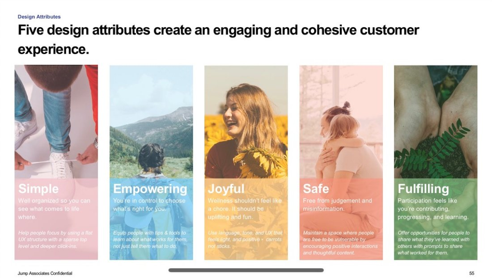

A diabetes device manufacturer wanted to build a daily-use app. Research revealed something unexpected: people with diabetes actively avoid diabetes. That single insight pivoted the entire product strategy and opened up a market nearly 50x larger than originally scoped.
A major diabetes device manufacturer had built its business around physical products. With the category shifting toward digital health, they wanted to expand into software and create an app that engaged people with diabetes on a daily basis. The goal was to become a trusted part of their health routine, not just a tool they reached for at the doctor's office.
As Content Contributor, I led the research, insight development, and strategic recommendations. A team of designers shaped the concept in parallel. My work drove the strategic reframe that defined the product direction.

Early-stage concept board from the synthesis phase.
The research combined secondary research on behavior change and competitive benchmarking with a single-entry diary study followed by virtual ethnographic interviews with people with diabetes. A key methodological choice shaped everything: we ran the study as a general health and wellness study without disclosing the diabetes focus. Participants did not bring up diabetes until directly asked. They talked about their sleep, stress, exercise, and relationships and avoided the topic entirely.
Two findings held consistently across participants:
The research led to a strategic pivot with real market consequences. Instead of building a diabetes app, we recommended building a metabolic health app — one that could appeal to people with diabetes without triggering the shame response, while simultaneously expanding the product's addressable market.
The original scope was approximately 6M insulin-treated Type 2 patients. Reframing around metabolic health opened the product to Type 2 non-insulin users (32.7M), pre-diabetics (88M), and the metabolically unhealthy (161.7M) — a potential market of nearly 300M people who share a common underlying need.
A parallel strategic imperative: go direct to consumers before engaging physicians and payers. Building for payers first creates the risk of producing an over-medicalized product that alienates the very users it needs to reach. Consumer adoption drives provider and payer engagement, not the other way around.
"Lauren gets it done. And she doesn't skimp on quality. In working on the diabetes market, Lauren pushed until she made it work after a week of searching. She set up a time with another teammate to ask for help, created Excel models, and cracked it. It was a tour-de-initiative and acuity that I could never have done."
— Brady Bates, Jump Associates (now Salesforce)
The expanded addressable market: from insulin-treated diabetes to the full metabolic health segment.

The go-to-market imperative: reach consumers first, attract payers and providers through demonstrated engagement.
The resulting concept — a metabolic wellness app called In Touch — was built around four core features. Track lets users monitor the health metrics that matter most to them. Insights reveals connections between their behaviors and how they feel. Explore surfaces tips and reflections from a matched community of people with similar physiological profiles. Try lets users pick habits to experiment with over a defined period.
Five design attributes guided every decision: Simple, Empowering, Joyful, Safe, and Fulfilling. The framing was deliberate. None of the attributes reference diabetes. The product was designed to feel like a wellness tool first, not a disease management tool.

Four core features prototyped for usability testing.

Five design attributes guiding the full product experience.
The project delivered a reframed product strategy, a validated market expansion rationale, and a prototyped app concept ready for usability testing. The core recommendation — lead with metabolic health, go direct to consumers, and design out the shame trigger — held across every dimension of the research.
How you frame a study shapes what you find. Running this as a general health and wellness study rather than a diabetes study removed the social desirability bias that would have colored every response. The avoidance behavior that became the cornerstone of our strategy only surfaced because participants weren't primed to perform wellness around diabetes. I now treat research framing and screener design as strategic decisions in their own right — particularly on topics where identity and stigma are in play.